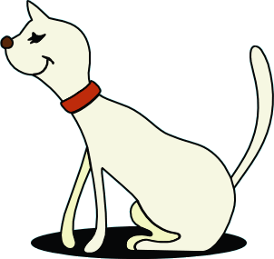

ミニチュア・プードル
体高２８㎝～３８㎝
トイ・プードル
大きさは３サイズ
少なくとも５００年前にはヨーロッパ各地にいたと言われていて、護羊犬や水辺の猟を得意とする犬種だった。
一般的に、サイズが小さくなると人への依存心が高くなるといわれているが、大きさによる性格の違いは特にない。
性格はとても賢く、従順で活動的。訓練性も高く学習能力も高い。
観察力がある。それらの要素と、華やかな容姿から、一時はサーカスの呼び物になっていた。
毛が抜けにくく体臭が少なく、飼いやすいといわれる。

体高２８㎝以下
街中でスタンダードを
見つけた時は、ちょっと
びっくりするかもね。
１６世紀ごろからフランスの
上流階級の夫人に愛される
ようになりミニチュア・サイズ
が作り出された。
１８世紀にはトイ・サイズ
も作り出された。日本では
大人気
スタンダード・カットはプードルを優雅に気品よく見せるカットだ。
現在、プードルのカットの種類は１００以上あるといわれている。
実は今が旬のテディ風やテリア風も似たようなスタイルは昔から
あったそう。
ブラック・ホワイト・ブラウン・アプリコット・レッド・シルバー
（ブルー・クリーム・ベージュ・カフェ・オレなど）